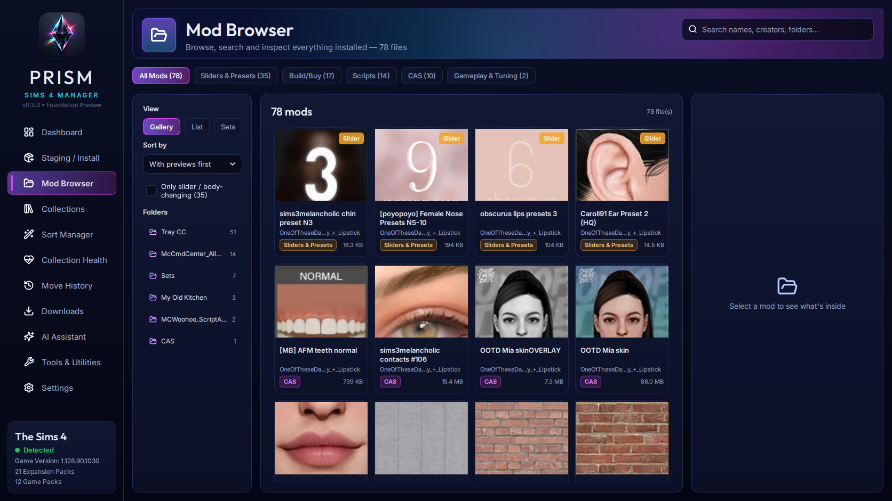
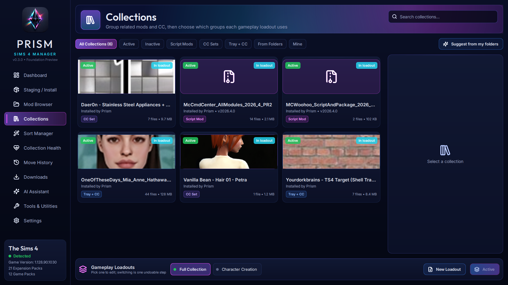
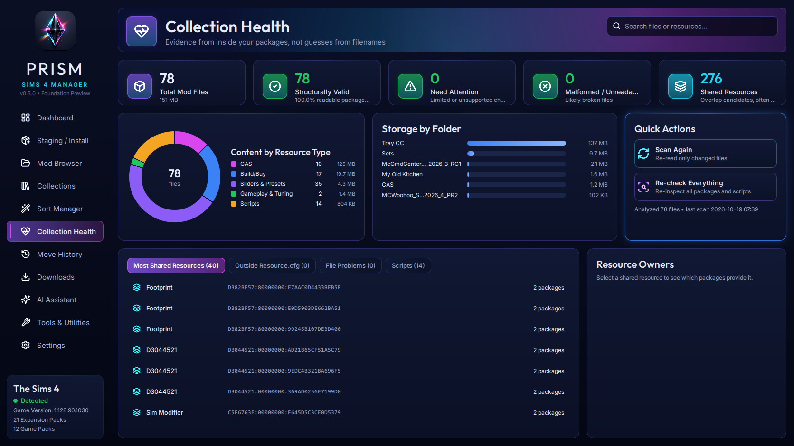
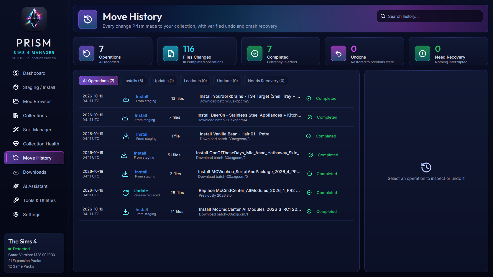
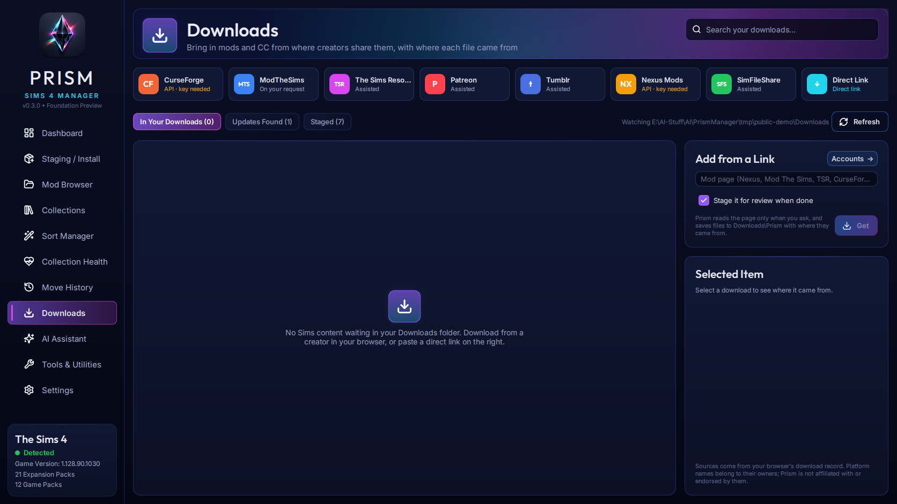
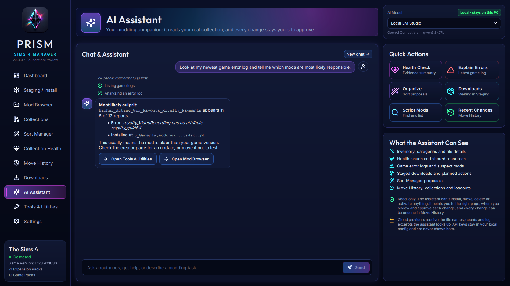
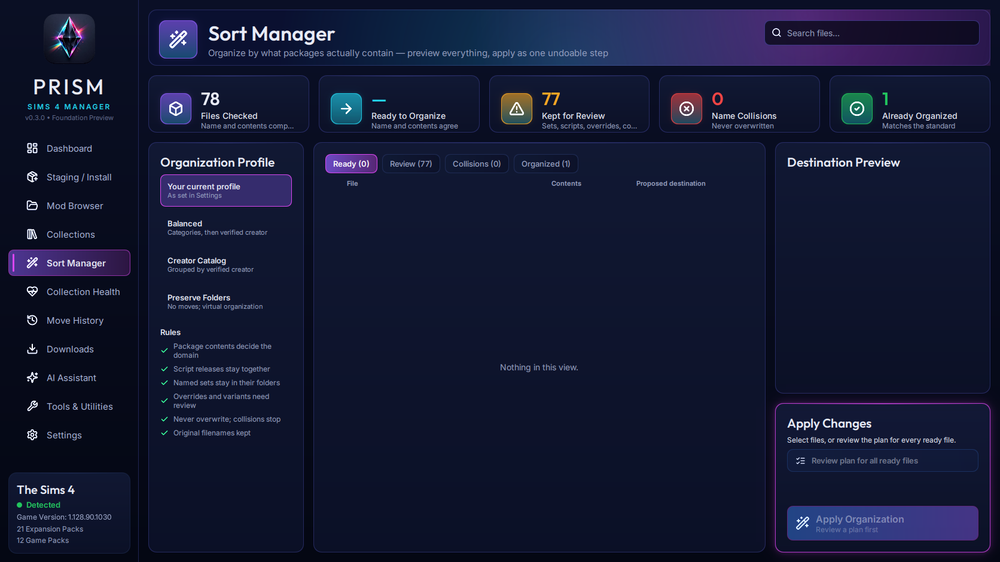
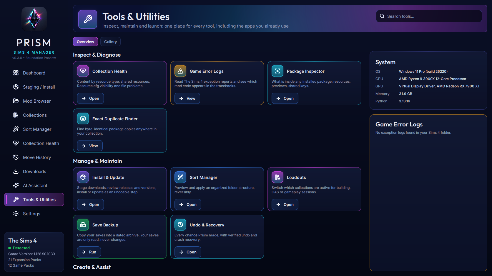

Prism · Sims 4 Manager
A free, open-source mod and custom-content manager for The Sims 4: visual, careful, and honest about what it knows.
In active development · source code coming with the first public release
A free, open-source mod and custom-content manager for The Sims 4: visual, careful, and honest about what it knows.
In active development · source code coming with the first public release
Review exactly what moves and what gets replaced, then install as one transaction you can undo, with recovery after crashes or power loss. Prism never overwrites a file.
Prism reads what is inside each package (resource types, CAS body types, previews, script versions) instead of trusting names.
A fast visual gallery of 40,000+ files with embedded previews, categories, folders and suggested sets.
Group related content and switch gameplay loadouts in one undoable step. Nothing is deleted.
Organization driven by package contents, previewed first. Named sets and script releases stay together.
Find files the game won't load, contested resources, and the mods that appear in exception reports.
Prism tracks where each download came from, uses official APIs like Nexus Mods with your key, and never bypasses site rules.
Use local models or your own cloud keys. The assistant only reads your collection, and every change stays yours to approve.









Screenshots show a small demo collection. Custom content shown belongs to its creators.
Prism is free software under the GNU General Public License v3.0 or later, with no paid tiers. Copies and modified versions must keep the attribution “Based on Prism Sims 4 Manager by ArchAngelAries and Prism contributors.” Questions and feedback: GitHub Issues · Repository